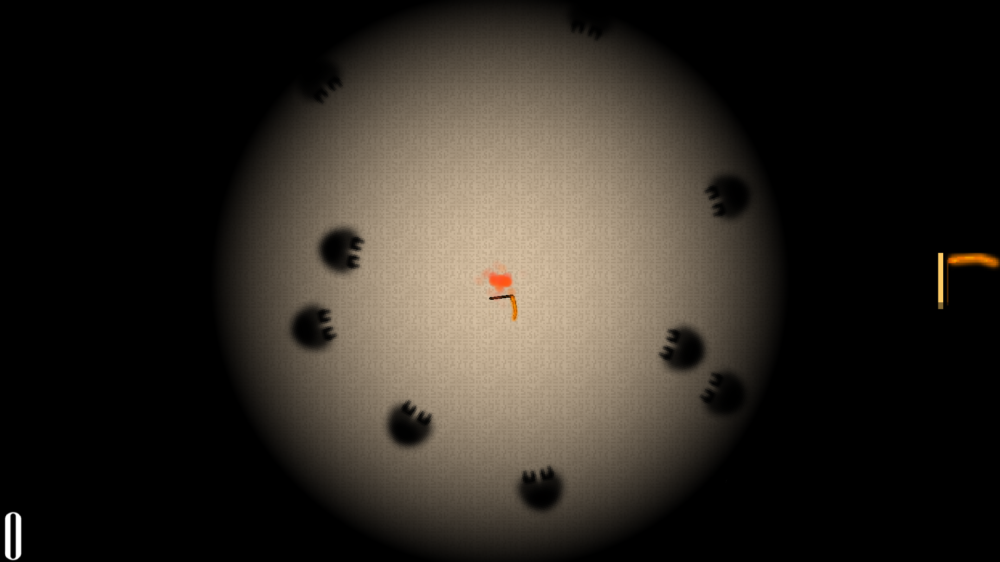
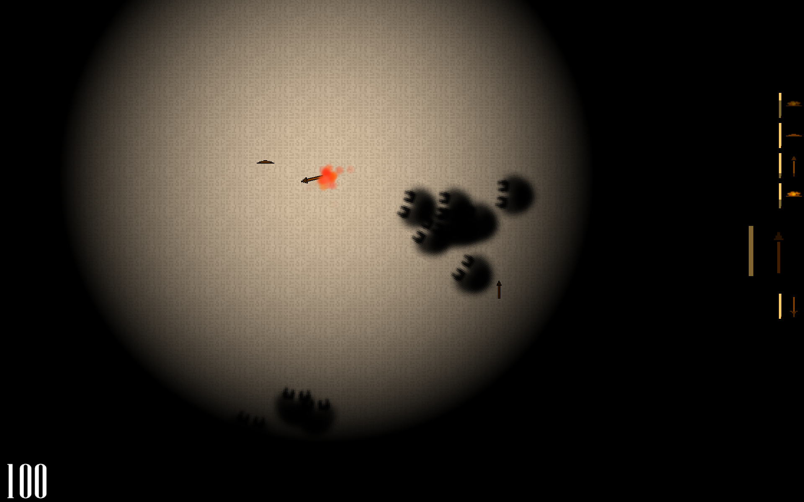

how long can you keep stalling?
Perhaps it is too soon to talk about the ups and downs of this ludum dare. I still think its a pretty good game, but I am too burned out on it to develop a post-mortem, and I would like to switch from LWJGL to OpenGL in C++. I think I made a pretty fun game though, and the audio turned out pretty decent because I didn't even try and make a song, I just tried to make some atmospheric drum beats in the background.
A circular wall of darkness closes in on you. Wraiths lunge at you from the darkness. You must use your weapons to defeat the wraiths, but you also must sacrifice them so that you can create a fire that holds back the darkness. Journey onwards to find more weapons, and don't let the wraiths touch you!
 DOWNLOAD HEREthe following contains spoilers for the weapons you can find, read if you want but it ruins the fun a bit in my opinion. (hover over to reveal)
You can find a couple different types of weapons. There are spears, which you can use to pick off wraiths from a distance, but they have a small aoe. There are swords, which are a pretty reliable and common weapon that is good for picking off some wraiths that get too close for comfort. Scythes have a great aoe and last for a while, this will hold them back for a while if you can find one. Shields don't actually kill wraiths unless they are on fire, they just push them back. If you do choose to ignite it, it will take more damage per wraith you kill with it, you might want to keep it for firewood. Styrene Polymer is a compound that will carry your flame across the battlefield, destroying any wraiths in your path while it lasts. It is a great bit of fun if you can find it. 